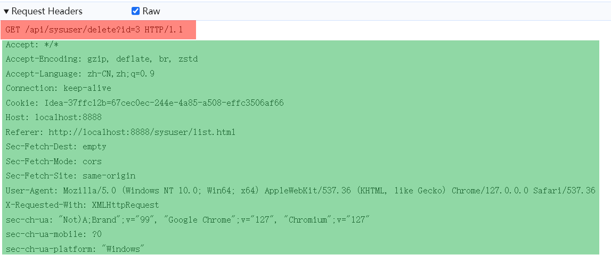
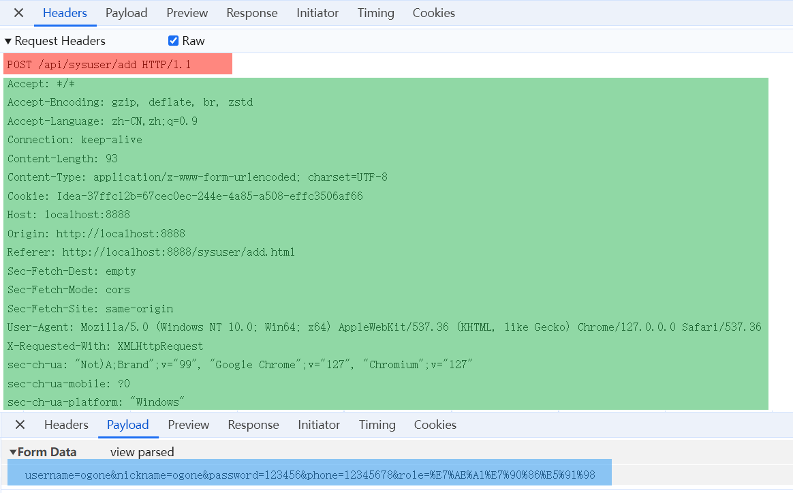
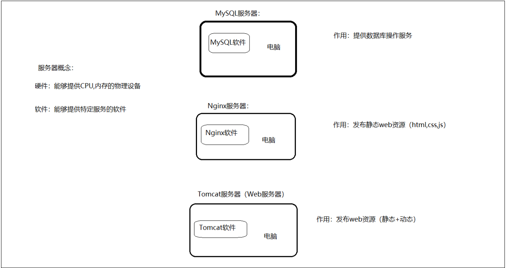

HTTP协议与Tomcat服务器
1. HTTP 协议
1.1 HTTP 概述
概念：Hyper Text Transfer Protocol，超文本传输协议，规定了浏览器和服务器之间数据传输的规则。

- HTTP 是互联网上应用最为广泛的一种网络协议
- HTTP 协议要求：浏览器在向服务器发送请求数据时，或是服务器在向浏览器发送响应数据时，都必须按照固定的格式进行数据传输
1.2 HTTP特点
基于TCP协议: 面向连接，安全
TCP是一种面向连接的(建立连接之前是需要经过三次握手)、可靠的、基于字节流的传输层通信协议，在数据传输方面更安全
基于请求-响应模型: 一次请求对应一次响应（先请求后响应）
请求和响应是一一对应关系，没有请求，就没有响应
HTTP协议是无状态协议: 对于数据没有记忆能力。每次请求-响应都是独立的
无状态指的是客户端发送HTTP请求给服务端之后，服务端根据请求响应数据，响应完后，不会记录任何信息。
- 缺点: 多次请求间不能共享数据
- 优点: 速度快
请求之间无法共享数据会引发的问题：
- 如：京东购物。加入购物车和去购物车结算是两次请求
- 由于HTTP协议的无状态特性，加入购物车请求响应结束后，并未记录加入购物车是何商品
- 发起去购物车结算的请求后，因为无法获取哪些商品加入了购物车，会导致此次请求无法正确展示数据
具体使用的时候，我们发现京东是可以正常展示数据的，原因是 Java 早已考虑到这个问题，并提出了使用会话技术(Cookie、Session)来解决这个问题。这个我们后面会介绍。
1.3 HTTP 请求响应
浏览器和服务器是按照 HTTP 协议进行数据通信的。HTTP
协议又分为：请求协议和响应协议。 刚才提到 HTTP
协议是规定了请求和响应数据的格式，那具体的格式是什么呢?
我们可以打开浏览器，点击 F12 打开开发者工具，点击 Network
来查看

- 浏览器向服务器进行请求时：服务器按照固定的格式进行解析
- 服务器向浏览器进行响应时：浏览器按照固定的格式进行解析
所以，我们学习 HTTP 主要就是学习请求和响应数据的具体格式内容。
1.3.1 HTTP 请求
- 请求协议：浏览器将数据以请求格式发送到服务器
- 包括：请求行、请求头 、请求体
在 HTTP1.1 版本中，浏览器访问服务器的几种方式：
| 请求方式 | 请求说明 |
|---|---|
| GET | 获取资源。 向特定的资源发出请求。例http://www.baidu.com/s?wd=tomcat |
| POST | 传输实体主体。 向指定资源提交数据进行处理请求（例：上传文件），数据被包含在请求体中。 |
| OPTIONS | 返回服务器针对特定资源所支持的 HTTP 请求方式。 因为并不是所有的服务器都支持规定的方法，为了安全有些服务器可能会禁止掉一些方法，例如：DELETE、PUT等。那么 OPTIONS 就是用来询问服务器支持的方法。 |
| HEAD | 获得报文首部。 HEAD 方法类似 GET 方法，不同的是 HEAD 方法不要求返回数据。通常用于确认 URI 的有效性及资源更新时间等。 |
| PUT | 传输文件。 PUT 方法用来传输文件。类似 FTP 协议，文件内容包含在请求报文的实体中，然后请求保存到 URL 指定的服务器位置。 |
| DELETE | 删除文件。 请求服务器删除 Request-URI 所标识的资源 |
| TRACE | 追踪路径。 回显服务器收到的请求，主要用于测试或诊断 |
| CONNECT | 要求用隧道协议连接代理。 HTTP1.1 协议中预留给能够将连接改为管道方式的代理服务器 |
在我们实际应用中常用的就是 ：GET、POST
GET方式的请求协议：

- 请求行 ：HTTP
请求中的第一行数据。由：
请求方式、资源路径、协议/版本组成（之间使用空格分隔）- 请求方式：GET
- 资源路径：/api/sysuser/delete?id=3
- 请求路径：/api/sysuser/delete
- 请求参数：id=3
- 请求参数是以
key=value形式出现 - 多个请求参数之间使用
&连接
- 请求参数是以
- 请求路径和请求参数之间使用
?连接
- 协议/版本：HTTP/1.1
- 请求头
：第二行开始，上图绿色部分内容就是请求头。格式为
key: value形式，HTTP 是个无状态的协议，所以在请求头设置浏览器的一些自身信息和想要响应的形式。这样服务器在收到信息后，就可以知道是谁，想干什么
1 | |
GET 请求的请求参数在请求行中，故不需要设置请求体
服务端可以根据请求头中的内容来获取客户端的相关信息，有了这些信息服务端就可以处理不同的业务需求。
比如: - 不同浏览器解析 HTML 和 CSS 标签的结果会有不一致，所以就会导致相同的代码在不同的浏览器会出现不同的效果 - 服务端根据客户端请求头中的数据获取到客户端的浏览器类型，就可以根据不同的浏览器设置不同的代码来达到一致的效果（这就是我们常说的浏览器兼容问题）
POST方式的请求协议：

- 请求行：上图红色部分，包含
请求方式、资源路径、协议/版本,- 请求方式：POST
- 资源路径：/api/sysuser/add
- 协议/版本：HTTP/1.1
- 请求头：上图绿色部分
- 请求体：上图蓝色部分，存放请求参数，请求体和请求头之间有一个空行隔开，用于标记请求头结束，Chrome 浏览器在 Payload 中
GET 请求和 POST 请求的区别：
| 区别方式 | GET请求 | POST请求 |
|---|---|---|
| 请求参数 | 请求参数在请求行中。 例：/api/sysuser/delete?id=3 |
请求参数在请求体中 |
| 请求参数长度 | 请求参数长度有限制(浏览器不同限制也不同) | 请求参数长度没有限制 |
| 安全性 | 请求参数暴露在浏览器地址栏中，安全性低。 | 安全性相对高 |
1.3.2 HTTP 响应
- 响应协议：服务器将数据以响应格式返回给浏览器
- 包括：响应行 、响应头 、响应体
与 HTTP 请求一样，HTTP 响应的数据也分为3部分：响应行、响应头 、响应体

- 响应行：响应数据的第一行。响应行由
协议及版本、响应状态码组成- 协议/版本：HTTP/1.1
- 响应状态码：200
- 响应头：响应数据的第二行开始，上图绿色部分。格式为
key：value形式，HTTP 是个无状态的协议，所以可以在请求头和响应头中设置一些信息和想要执行的动作，这样，对方在收到信息后，就可以知道你是谁，你想干什么
1 | |
- 响应体：响应数据的最后一部分，上图蓝色部分，存放响应数据
- 响应体和响应头之间有一个空行隔开，用于标记响应头结束，Chrome 浏览器在 Payload 中
1.3.3 响应状态码
响应状态码主要分为以下五类：
| 状态码分类 | 说明 |
|---|---|
| 1xx | 响应中 — 临时状态码。表示请求已经接受，告诉客户端应该继续请求或者如果已经完成则忽略 |
| 2xx | 成功 — 表示请求已经被成功接收，处理已完成 |
| 3xx | 重定向 — 重定向到其它地方，让客户端再发起一个请求以完成整个处理 |
| 4xx | 客户端错误 — 处理发生错误，责任在客户端，如：客户端的请求一个不存在的资源，客户端未被授权，禁止访问等 |
| 5xx | 服务器端错误 — 处理发生错误，责任在服务端，如：服务端抛出异常，路由出错，HTTP 版本不支持等 |
这里再罗列一些常见的响应状态码：
| 状态码 | 英文描述 | 解释 |
|---|---|---|
| ==200== | OK |
客户端请求成功，即处理成功，这是我们最想看到的状态码 |
| 302 | Found |
指示所请求的资源已移动到由Location响应头给定的
URL，浏览器会自动重新访问到这个页面 |
| 304 | Not Modified |
告诉客户端，你请求的资源至上次取得后，服务端并未更改，你直接用你本地缓存吧。隐式重定向 |
| 400 | Bad Request |
客户端请求有语法错误，不能被服务器所理解 |
| 403 | Forbidden |
服务器收到请求，但是拒绝提供服务，比如：没有权限访问相关资源 |
| ==404== | Not Found |
请求资源不存在，一般是URL输入有误，或者网站资源被删除了 |
| 405 | Method Not Allowed |
请求方式有误，比如应该用GET请求方式的资源，用了POST |
| 428 | Precondition Required |
服务器要求有条件的请求，告诉客户端要想访问该资源，必须携带特定的请求头 |
| 429 | Too Many Requests |
指示用户在给定时间内发送了太多请求（“限速”），配合 Retry-After(多长时间后可以请求)响应头一起使用 |
| 431 | Request Header Fields Too Large |
请求头太大，服务器不愿意处理请求，因为它的头部字段太大。请求可以在减少请求头域的大小后重新提交。 |
| ==500== | Internal Server Error |
服务器发生不可预期的错误。服务器出异常了，赶紧看日志去吧 |
| 503 | Service Unavailable |
服务器尚未准备好处理请求，服务器刚刚启动，还未初始化好 |
想了解更多可以去这里查看：：状态 | Status - HTTP 中文开发手册 - 开发者手册 - 腾讯云开发者社区-腾讯云 (tencent.com)
关于响应状态码，我们主要认识三个状态码，其余的等后期用到了再去掌握：
- 200 OK 客户端请求成功
- 404 Not Found 请求资源不存在，一般是 URL 输入错误或网站资源被删除
- 500 Internal Server Error 服务端发生不可预期的错误，服务器出现异常
1.4 HTTP 协议解析
可以使用 ServerSocket 编写服务器代码对 HTTP 进行解析
1 | |
浏览器输入：http://localhost:8080 就会访问到
ServerSocket 程序，ServerSocket 程序会读取服务器上
html/a.html 文件，并把文件数据发送给浏览器，浏览器接收到
a.html 文件中的数据后进行解析并呈现在页面上。
现在大家知道了服务器是可以使用 Java 完成编写，是可以接受页面发送的请求和响应数据给前端浏览器的。而在开发中真正用到的Web服务器，我们不用自己写，都是使用目前比较流行的 Web 服务器，比如 Jetty、WebLogic、WebSphere，以及最受欢迎的 Apache 软件基金会的 Tomcat。

Web 服务器是一个软件程序，对 HTTP 协议的操作进行封装，使得程序员不必直接对协议进行操作(不用程序员自己写代码去解析 HTTP 协议规则)，让 Web 开发更加便捷，主要功能是 “提供网上信息浏览服务” 。
2. Tomcat 服务器
2.1 服务器概述
服务器硬件 指的也是计算机，只不过服务器要比我们日常使用的计算机大很多。服务器，也称伺服器。是提供计算服务的设备。由于服务器需要响应服务请求，并进行处理，因此一般来说服务器应具备承担服务并且保障服务的能力。
服务器的构成包括处理器、硬盘、内存、系统总线等，和通用的计算机架构类似，但是由于需要提供高可靠的服务，因此在处理能力、稳定性、可靠性、安全性、可扩展性、可管理性等方面要求较高。 在网络环境下，根据服务器提供的服务类型不同，可分为：文件服务器，数据库服务器，应用程序服务器，WEB服务器等。
服务器只是一台设备，必须安装服务器软件才能提供相应的服务。
服务器软件 服务器软件：基于 ServerSocket 编写的程序
- 服务器软件本质是一个运行在服务器设备上的应用程序
- 能够接收客户端请求，并根据请求给客户端响应数据

Web 服务器是安装在服务器端的一款软件，将来我们把自己写的 Web 项目部署到 Tomcat 服务器软件中，当 Web 服务器软件启动后，部署在 Web 服务器软件中的页面就可以直接通过浏览器来访问了。
2.2 Tomcat 简介
Tomcat 服务器软件是一个免费的开源的 Web 应用服务器。是 Apache 软件基金会的一个核心项目。由 Apache，Sun 和其他一些公司及个人共同开发而成。
由于 Tomcat 只支持 Servlet/JSP 少量 JavaEE 规范，所以是一个开源免费的轻量级 Web 服务器。
JavaEE规范： JavaEE => Java Enterprise Edition(Java企业版)
JavaEE 规范就是指 Java 企业级开发的技术规范总和。包含13项技术规范：JDBC、JNDI、EJB、RMI、JSP、Servlet、XML、JMS、Java IDL、JTS、JTA、JavaMail、JAF
因为 Tomcat 支持 Servlet/JSP 规范，所以 Tomcat 也被称为 Web 容器、Servlet 容器。JavaWeb 程序需要依赖 Tomcat 才能运行。
Tomcat的官网: Apache Tomcat® - Welcome!
2.3 Tomcat 基本使用
下载： 直接从官方网站下载：Apache Tomcat® - Apache Tomcat 9 Software Downloads
Tomcat软件类型说明： - tar.gz文件，是 linux 和 mac 操作系统下的压缩版本 - zip文件，是 window 操作系统下压缩版本（我们选择zip文件）
Tomcat 是绿色版，直接解压即可
注意，Tomcat 在解压缩的时候，解压所在的目录可以任意，但最好解压到一个不包含中文和空格的目录，因为后期在部署项目的时候，如果路径有中文或者空格可能会导致程序部署失败。
Tomcat 目录结构：

bin：目录下有两类文件，一种是以.bat结尾的，是
Windows 系统的可执行文件，一种是以 .sh 结尾的，是 Linux
系统的可执行文件。 webapps：就是以后项目部署的目录。
卸载：绿色版直接删除目录即可
启动：双击 Tomcat 解压目录 /bin/startup.bat 文件即可启动 Tomcat
注意: Tomcat 服务器启动后，黑窗口不会关闭，只要黑窗口不关闭，就证明 Tomcat 服务器正在运行
Tomcat 的默认端口为
8080，所以在浏览器的地址栏输入：http://127.0.0.1:8080
即可访问 Tomcat 服务器，127.0.0.1 也可以使用 localhost
代替。如：http://localhost:8080
Tomcat 启动的过程中，遇到控制台有中文乱码时，可以修改 conf/logging.prooperties 文件，将下面这行的 UTF-8 改为 GBK
1 | |
关闭： 直接×掉运行窗口：强制关闭（不建议） bin\shutdown.bat：正常关闭 Ctrl+C：正常关闭
部署项目： 将项目放置到 webapps 目录下， 即部署完成
常见问题一：Tomcat启动时，窗口一闪而过 检查 JAVA_HOME 环境变量是否正确配置
常见问题二：端口号冲突 找到对应程序，将其关闭掉，或者修改 Tomcat 启动的端口号，需要修改 conf/server.xml 文件中的 port
注: HTTP 协议默认端口号为80，如果将 Tomcat 端口号改为80，则将来访问 Tomcat 时，将不用输入端口号。